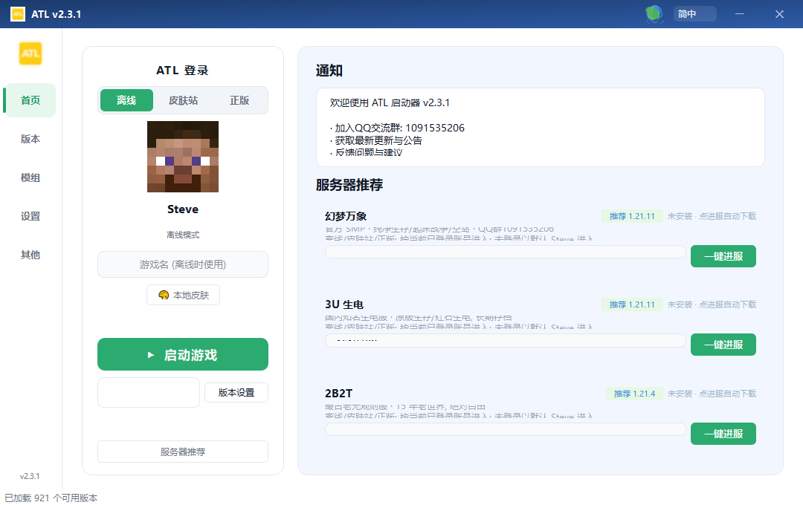

一款清爽好用的 Minecraft 启动器：离线 / 皮肤站 / 正版三种账号随意切换，版本与模组一键下载，热门服务器一键进服，还有自动检查更新。解压即用，开玩。
ATL 把登录、下载、管理、进服这些事都替你做好
官方版本与主流加载器都能下，国内源提速，下载线程可调，选好版本就能启动。
内置 Modrinth 模组库：搜索、分类、批量下载、依赖提示，装模组不再折腾。
离线 / 皮肤站 (LittleSkin) / 微软正版一键切换，皮肤头像自动同步，也能用本地皮肤。
设置页内置热门服务器推荐：地址可改，版本没装自动下载，点一下直接进服。
登录、版本、模组、设置，一屏安排明白

主界面：左侧账号登录，右侧通知与更新公告
解压 zip 后运行 ATL.exe 即可，无需安装，自动检查更新
下载 ATL.zip（v2.3.1）